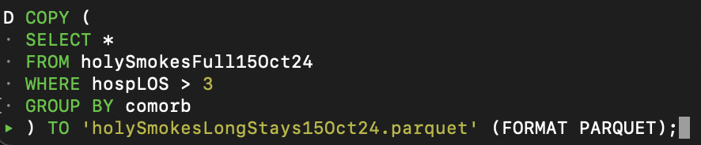

A knowledgeable data scientist can trace your steps but a little effort up-front makes many details immediately clear.
Defining Completeness
An optimal end-of-project package includes:
Interpretable code
Defining Completeness
An optimal end-of-project package includes:
Interpretable code
The original dataset and subsets used
Defining Completeness
An optimal end-of-project package includes:
Interpretable code
The original dataset and subsets used
A project or script at ‘run-and-go’ status
Small Datasets
So, what are best practices for small datasets, meaning:
Data that’s small enough where we can reasonably fit an infinite number of iterations, subsets, and models in memory?
Small Datasets
So, what are best practices for small datasets, meaning:
Data that’s small enough where we can reasonably fit an infinite number of iterations, subsets, and models in memory?
Basically, everything above!
Small Datasets
In addition to these principles, these tools are what [almost] everyone else is hoping to see:
Small Datasets
In addition to these principles, these tools are what [almost] everyone else is hoping to see:
Small Datasets
In addition to these principles, these tools are what [almost] everyone else is hoping to see:
Tidyverse
The components of the tidyverse have emerged as R users’ lingua franca.
Tidyverse
The components of the tidyverse have emerged as R users’ lingua franca.
Curated by Posit and led by COPSS-winning kiwi Hadley Wickham.
Tidyverse
The components of the tidyverse have emerged as R users’ lingua franca.
Curated by Posit and led by COPSS-winning kiwi Hadley Wickham.
Dplyr gives you access to tons of convenient, SQL-esque operations which absolutely outfox R’s base functions for data manipulation.
Part 2: Medium-size
Now, we’ll start getting less practical and more technical.
I would categorize this shift upward as when many people start having to take their data ‘seriously’.
Subsetting and wrangling your data adopts a technical layer on top of an experimental design/logical layer.
Back to Definitions
I’ve handwaved away the number demarcating ‘medium-sized’ as a few GBs, but…
It’s really any size where you can’t be absolutely greedy with your memory and computational power anymore.
Back to Definitions
I’ve handwaved away the number demarcating ‘medium-sized’ as a few GBs, but…
It’s really any size where you can’t be absolutely greedy with your memory and computational power anymore.
Thus, this is a moving target, dependent on your methods and your resources [e.g. structural equation models, like mixed effects models; anything Bayesian; etc…]
New Tools
We’ll continue using many facets of dplyr and tidyverse, but we’re going to need some new tools.
We also ought to consider our data differently depending on whether we’re trying to query it, or trying to model with it.
New Tools
We’ll continue using many facets of dplyr and tidyverse, but we’re going to need some new tools.
We also ought to consider our data differently depending on whether we’re trying to query it, or trying to model with it.
To those ends, respectively, I introduce:
New Tools
We eschew the humble and ubiquitous tibble from tidyverse and replace it with two new items of power:
Apache Arrow for data storage, glimpses, and creating subsets.
New Tools
We eschew the humble and ubiquitous tibble from tidyverse and replace it with two new items of power:
Apache Arrow for data storage, glimpses, and creating subsets.
data.table, which is lean and fast but not quite as lean and fast as Arrow. However, data.table ‘extends’ R’s data.frame, so anywhere you see an R package accepting a data.frame object, you can sub in a data.table.
New Tools
We will leverage this one-two punch to quickly assess and manipulate our data, then store it as tidily as possible so we can maintain our good archival breadcrumbs.
MORE… New… Tools?
We’re also going to see a number of data sources transition away from the notorious .csv.
Instead, you’ll see data stored in other formats - especially Apache Parquet.
MORE… New… Tools?
We’re also going to see a number of data sources transition away from the notorious .csv.
Instead, you’ll see data stored in other formats - especially Apache Parquet.
This is going to be radically smaller and faster to access than a comparable .csv - some of my work has shrunk by a factor of 10.
This should be simultaneously effective and tractable.
Still using a procedural, all-in-one pipeline that you can probably keep in your R script.
Datasets to practice with:
Part 3: Large Data
Large data is going to skirt the limitations of what’s possible without more resources [cloud, HPC, etc.]…
‘Bigger than memory’ is something you’ll start hearing lots.
Part 3: Large Data
Large data is going to skirt the limitations of what’s possible without more resources [cloud, HPC, etc.]…
‘Bigger than memory’ is something you’ll start hearing lots.
The paradigm shift here is a definitive demarcation between your data science workspace and where data is stored.
If you have more experience or work in a more robust environment you already know these lines are blurred, but let me cook!!!
Case Study Setup
It’s possible to go through life and data science at large without ever running into data this size, so…
How did I find myself here?
Observational Studies using EHR
Joined UCI CSC in Nov. 2023 because they had repeated requests for massive data projects.
First on my plate was a CKD/Diabetes comorbidity study based on data harvested from TriNetX.
TriNetX CKD/Diabetes Study
Very ‘compsci’ versus ‘stats’ datasets; a few huge tables to be joined with patient and encounter keys, requiring substantial data engineering to arrange for analysis.
Colleagues are ‘old-school’ backend engineers and traditional statisticians.
They were given hundreds of GBs of data and everyone fainted.
TriNetX CKD/Diabetes Study
Very ‘compsci’ versus ‘stats’ datasets; a few huge tables to be joined with patient and encounter keys, requiring substantial data engineering to arrange for analysis.
Colleagues are ‘old-school’ backend engineers and traditional statisticians.
They were given hundreds of GBs of data and everyone fainted.
TriNetX CKD/Diabetes Study
Total was around 350 GB of raw .csvs.
Initial approach used rsql to chunk out portions of these tables, as big as memory would allow, and query the subsets.
Lot of problems here - because of how records were stored, my predecessor had to build all these intra-chunk checks to make sure all records of relevant patients were collected and arranged longitudinally, etc… Ghastly!
Processing took longer, and longer - overnight, in some cases.
How did we escape?
DuckDB and Managing Massive Data
DuckDB is a DBMS architecture that’s entirely focused on speed and size efficiency.
It handles bigger-than-memory queries like a champ.
DuckDB and Managing Massive Data
DuckDB is a DBMS architecture that’s entirely focused on speed and size efficiency.
It handles bigger-than-memory queries like a champ.
Since I was preparing the datasets for others to analyze in non-R languages, I found it [and continue to find it] helpful to completely differentiate the work of creating subsets from working in R on the analysis.
DuckDB and Managing Massive Data
One way of utilizing DuckDB is straight from the command line.
DuckDB and Managing Massive Data
One way of utilizing DuckDB is straight from the command line.
This is how I learned, so this is my preference - it gives you a little bit of ‘hackerman’ flair, feels generally impregnable to managers peeking over your shoulder, and comes off so arcane that it’s impressive per-se.
DuckDB and Managing Massive Data
One way of utilizing DuckDB is straight from the command line.
This is how I learned, so this is my preference - it gives you a little bit of ‘hackerman’ flair, feels generally impregnable to managers peeking over your shoulder, and comes off so arcane that it’s impressive per-se.
The only downside [depending on who you ask], is that you have to learn ddb’s brand of sql:
DuckDB: Metrics
Returning to our case study, remember that we had nearly 350 GB of data in .csv format.
Bringing those over, creating a duckdb database object locally, and reading those in as separate tables shrunk them down to ~31 GB.
Shrinking your storage need by more than a factor of 10? Pretty cool…
On top of that, queries, joins and other manipulation of the data now only took a minute or few, not hours or more.
DuckDB: Back to R
As you might imagine, DuckDB makes it super easy to export tables to our newly-discovered parquet format:
DuckDB: Back to R
As you might imagine, DuckDB makes it super easy to export tables to our newly-discovered parquet format:
Heck, we can even export subsets or the results of queries instead of entire tables:

DuckDB: Back to R
As you may notice, now we’ve returned to our previous layer of complexity:
DuckDB: Back to R
As you may notice, now we’ve returned to our previous layer of complexity:
Bonuses: Meeting in the Middle
I’ll be the first to admit these are relatively hacky…
Other members of RUG can attest to more comprehensive, robust methods.
To hint at what’s possible once you’re more comfortable in this space, there are two small addenda.
Leapfrogging
As you become more comfortable working with bigger datasets, or you own the entirety of the data science process, there’s less and less reason to segregate the data wrangling component from the rest of your work.
Leapfrogging
As you become more comfortable working with bigger datasets, or you own the entirety of the data science process, there’s less and less reason to segregate the data wrangling component from the rest of your work.
DuckDB and Arrow offer ways to connect to databases so you can work more directly on bigger-than-memory sets.
Leapfrogging
```{r}library(duckdb)con <- dbConnect(duckdb(), dbdir = "fullData15Oct24.duckdb", read_only = FALSE)# the con object is a channel for R's communication with the database.```
Leapfrogging
```{r}library(duckdb)con <- dbConnect(duckdb(), dbdir = "fullData15Oct24.duckdb", read_only = FALSE)# the con object is a channel for R's communication with the database.dbExecute(con, "CREATE TABLE thisYear AS SELECT * FROM fullData WHERE Year == 2024" )# dbExecute is used for operations that don't expect a returned value.# as you can see, we're just directly injecting strings of SQL.```
Leapfrogging
```{r}library(duckdb)con <- dbConnect(duckdb(), dbdir = "fullData15Oct24.duckdb", read_only = FALSE)# the con object is a channel for R's communication with the database.dbExecute(con, "CREATE TABLE thisYear AS SELECT * FROM fullData WHERE Year == 2024")# dbExecute is used for operations that don't expect a returned value.# as you can see, we're just directly injecting strings of SQL.dataSales2024 <- dbGetQuery(con, "SELECT employee, accountNo, accountVal FROM thisYear")# dbGetQuery is for queries that expect a response...```
Leapfrogging
There are layers to this, including efficiently registering views and working dplyr into your queries:
Caret’s one of my favorite packages to utilize here, and one of the things that keeps me coming back to R over python.
Caret is a hugely robust package that provides a suite of functions for Classification And REgression Training, analogous to the tidymodels component of the tidyverse.
Sampling and Prediction Testing with Caret
Say your data is immense, but it’s also so immense you don’t really need all of it to create a reasonable model (CLT holds at around 30, after all)…
Sampling and Prediction Testing with Caret
Say your data is immense, but it’s also so immense you don’t really need all of it to create a reasonable model (CLT holds at around 30, after all)…
It’s totally reasonable to train on a small subset of your data, then use something like arrow to use predict() to test it nimbly on the remainder of your data.
Sampling and Prediction Testing with Caret
Say your data is immense, but it’s also so immense you don’t really need all of it to create a reasonable model (CLT holds at around 30, after all)…
It’s totally reasonable to train on a small subset of your data, then use something like arrow to use predict() to test it nimbly on the remainder of your data.
Something I’m consistently cognizant of here (or in any cross-validation scheme) is even weighting and stratification.
Say your response of interest is binary, and pretty uneven; 70% of class 1, 30% of class 2.
Sampling and Prediction Testing with Caret
Say your response of interest is binary, and pretty uneven; 70% of class 1, 30% of class 2.
Caret handles this!
```{r}library(caret)trainIndex <- createDataPartition(data$Response, p = .9, list = FALSE, times = 1)```
Sampling and Prediction Testing with Caret
Say your response of interest is binary, and pretty uneven; 70% of class 1, 30% of class 2.
Caret handles this!
```{r}lbrary(caret)idxTrain <- createDataPartition(data$Response, p = .1, list = FALSE, times = 1)dataTrain <- data[idxTrain,]```
Here, caret is giving us a 10% subset [p above] of the data that maintains the 70/30 weight of our response factor.
Sampling and Prediction Testing with Caret
Here, caret is giving us a 10% subset [p above] of the data that maintains the 70/30 weight of our response factor.
We can take our subset and train on it…
```{r}lbrary(caret)idxTrain <- createDataPartition(data$Response, p = .1, list = FALSE, times = 1)dataTrain <- data[idxTrain,]mdl <- glm(Response ~ predictor1 + predictor2 + predictor3, data = dataTrain, family = "binomial")```
Sampling and Prediction Testing with Caret
And then, use arrow to manually calculate accuracy by interweaving predict across batches:
Hopefully this helps you conceptualize a path away from where many of us begin with tutorials, academia, bootcamps or kaggle projects into working with more and more complicated data science.
Personally, having started from such peculiar roots, I feel absolutely spoiled for choice when it comes to project kickoffs.
I’ll close out with the myriad resources I referenced while putting this together.
![]()